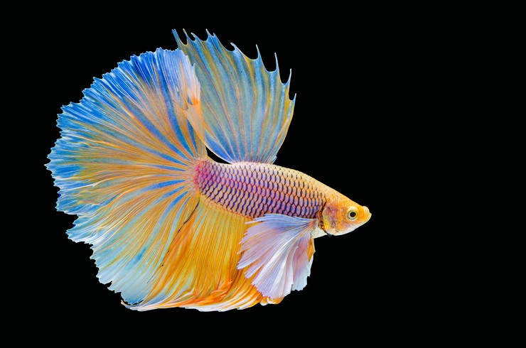

Купи меня!
Исполняю желания, моему слову можно верить!

Далеко не все знают названия рыб и тем более их научные наименования, зато у каждого будущего аквариумиста есть свои предпочтения
Одним нравятся одинокие хищники, другие предпочитают стайку мирных рыбок, одним хочется красных, другим серебристых и так далее.
Чтобы не просматривать всех подряд можно воспользоваться фильтром "Подобрать рыбку" и найти для себя подходящие виды.